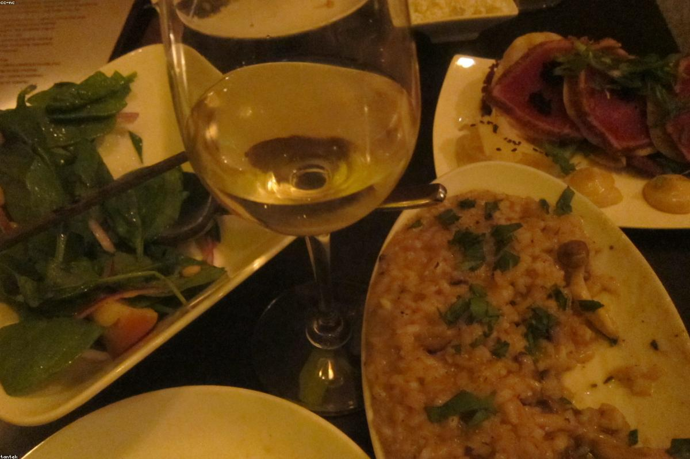
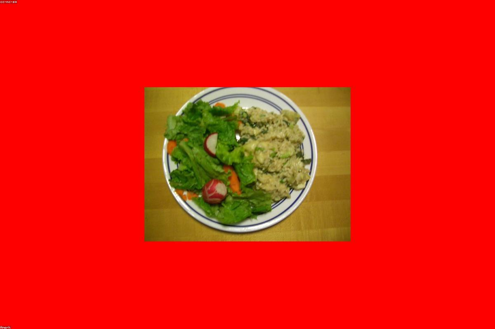
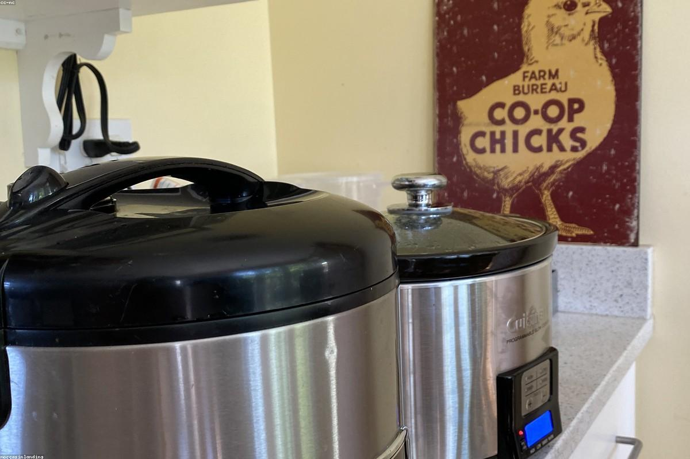

Creamy Vegan Mushroom Risotto Overview
This recipe creates a rich, velvety risotto for 4 people without using dairy. The key to the creamy texture lies in the high starch content of Arborio rice and the agitation process (stirring), which releases that starch into the broth. We will use a mix of mushrooms for depth of flavor and finish with a "mantecatura" technique using vegan fat to emulsify the sauce.
Kitchen & Ingredient Context
This recipe assumes you have a heavy-bottomed pot or Dutch oven to distribute heat evenly. We assume the use of dry white wine (like Pinot Grigio or Sauvignon Blanc) to deglaze the pan, but you can substitute extra vegetable broth mixed with a teaspoon of lemon juice or white wine vinegar if you prefer an alcohol-free version. We also assume the use of store-bought low-sodium vegetable broth, but homemade stock works excellently.
Step-by-Step Cooking Instructions
Ingredients
- 1.5 cups Arborio rice (do not rinse, as starch is needed)
- 5 to 6 cups vegetable broth (kept warm in a separate pot)
- 1 lb mixed mushrooms (cremini, shiitake, oyster), sliced
- 2 shallots, finely minced
- 3 cloves garlic, minced
- 0.5 cup dry white wine
- 3 tbsp olive oil (divided)
- 2 tbsp vegan butter (or extra olive oil)
- 0.25 cup nutritional yeast (optional, for cheesy flavor)
- 1 tbsp fresh thyme leaves
- Salt and black pepper to taste
- Fresh parsley for garnish
1. Warm the Broth
Pour the vegetable broth into a saucepan and keep it on a low simmer next to your main cooking pot. Cold broth shocks the rice and stops the cooking process, preventing the creamy texture from developing.
2. Sauté the Mushrooms
In your heavy-bottomed pot, heat 1 tablespoon of olive oil over medium-high heat. Add the sliced mushrooms and cook until browned and their liquid has evaporated (about 5-8 minutes). Season with a pinch of salt. Remove mushrooms from the pot and set aside. This prevents them from getting rubbery during the rice cooking.
3. Aromatics and Toasting
Reduce heat to medium. Add the remaining 2 tablespoons of olive oil to the pot. Add shallots and cook until softened (2-3 minutes). Add garlic and thyme, cooking for another minute until fragrant. Add the Arborio rice. Toast the rice, stirring constantly, for 1-2 minutes until the edges are translucent and the center remains opaque. This toasting step creates a shell around the grain so it doesn't turn to mush while slowly releasing starch.
4. Deglaze
Pour in the white wine. Stir constantly until the wine is fully absorbed by the rice.
5. The Risotto Method
Begin adding the warm broth, one ladle (about 0.5 cup) at a time. Stir frequently. Wait until the liquid is almost completely absorbed before adding the next ladle. The friction from stirring rubs the grains together, releasing the starch that creates the creamy sauce. Repeat this process for about 20-25 minutes. The rice is done when it is tender but still has a slight bite (al dente).
6. The Finish (Mantecatura)
Remove the pot from the heat. This is crucial. Stir in the cooked mushrooms, vegan butter, and nutritional yeast. Vigorously stir the mixture for 30 seconds to emulsify the fats with the starch. This step guarantees the creamy mouthfeel without dairy. Season with salt and pepper to taste. Garnish with fresh parsley and serve immediately.
Risotto Cooking Phases
| Phase | Duration | Key Action |
|---|---|---|
| Prep | 10-15 mins | Chop vegetables, slice mushrooms, warm broth |
| Sauté | 8-10 mins | Brown mushrooms, sweat shallots, toast rice |
| Simmer | 20-25 mins | Add broth gradually, stir frequently to release starch |
| Rest | 2-3 mins | Remove from heat, beat in fat (mantecatura) for creaminess |



 Fire
Fire Clock
Clock Basket
BasketIcons
 Airplane
Airplane Briefcase
Briefcase